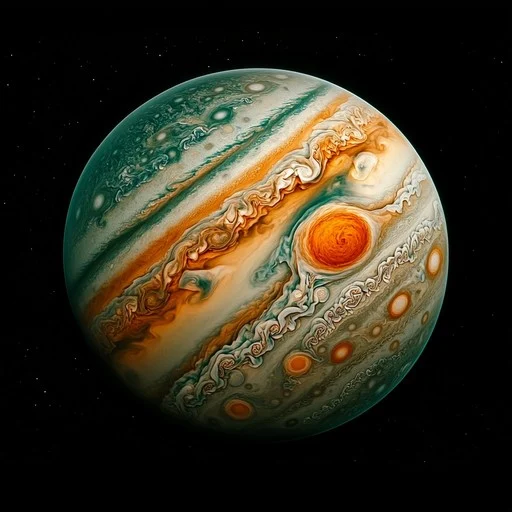

Jupiter is the largest planet in our solar system, a gas giant with a powerful magnetic field, dozens of moons, and iconic cloud bands including the Great Red Spot. It plays a major role in shaping the solar system’s dynamics.
📌 Key Facts
- Fifth planet from the Sun
- Distance from Sun: 778 million km
- Rotation(Day): 9 hours,56 minutes
- Orbital Period(Year): 11.9 Earth years
- Orbital Speed: 13 km/s
🔴Unique Featuures
It has atleast 95 known moons , Galilean Moons(largest): lo,Europa,Ganymede, Callisto Faint ring system made of dust particles Strongest magnetic field of any planet(20,000× Earth’s). It's magnetiic field drives powerful auroras at the poles. No solid surface, but possibly a rocky core deep inside. Its gravity helps protect Earth by deflecting comets and asteroids.